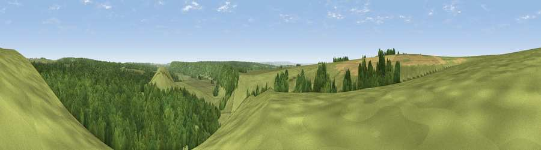

Viewpoint near Levisham
#21137 in England · top 45% of its area beats it · near LevishamThe view, rendered

A 360° render of this exact spot computed from the terrain model, tree cover and land cover — summer colours, afternoon light, calibrated against photographs of famous viewpoints. Real trees, hedges and buildings will differ in detail.
The panorama
Grey silhouette: terrain skyline in each direction (720 bearings, Earth curvature and refraction included). Dashed green: skyline with trees (+15 m) and buildings (+8 m) as obstacles. Blue strip: how far the ground is visible on each bearing.
Where the view opens
Wedge length = distance to the farthest visible ground on that bearing (vegetation-aware). Rings at 10, 25 and 50 km.
What fills the view
47% woodland · 46% grassland · 7% cropland
Angular shares of the visible panorama (visual magnitude), not map area. Landscape diversity 0.39 (0–1 Shannon).
Key numbers
More beautiful places nearby
The staircase of upgrades: each row has a higher view potential than everything closer. Driving times are estimates from straight-line distance, calibrated against real road routing — check an actual route before setting out.
| Place | Direction | Drive | Score |
|---|---|---|---|
| Whinny Nab | N · 1 km | ~2 min | 64.9 |
| Langdale Rigg End | E · 6 km | ~14 min | 65.1 |
| Pen Howe | N · 10 km | ~19 min | 67.7 |
| Flat Howe | N · 11 km | ~21 min | 76.4 |
| Viewpoint near Eskdaleside | N · 11 km | ~21 min | 78.4 |
| Viewpoint near Eskdaleside | N · 12 km | ~22 min | 80.7 |
| Viewpoint near Ravenscar | NE · 12 km | ~23 min | 81.5 |
| Viewpoint near Ravenscar | NE · 13 km | ~23 min | 90.0 |
54.33493, -0.67234 · source: screening · position refined by local search. Computed location — check access rights before visiting.